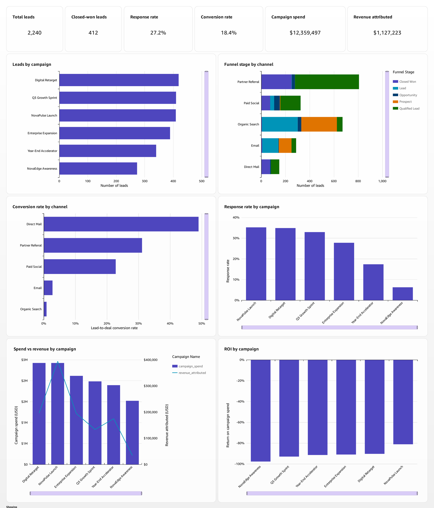
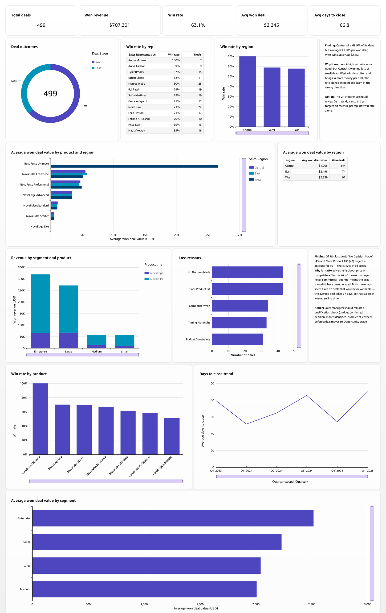
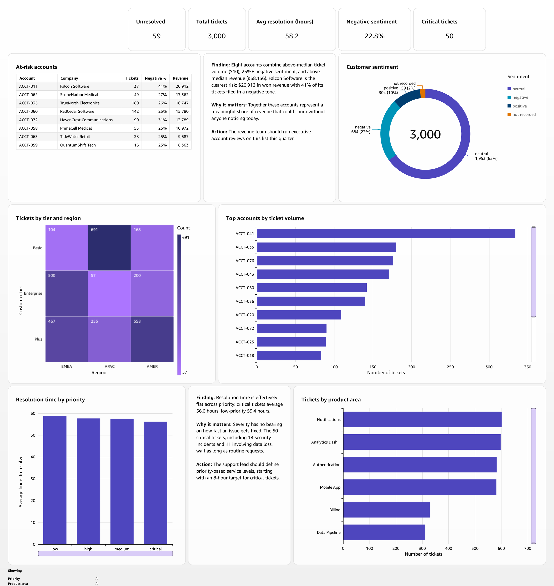

A three-view business intelligence system unifying marketing, sales and support data for a B2B SaaS revenue team, built in Amazon QuickSight with natural-language querying through Amazon Q.
View the repository and documentation →
A revenue team was working across three disconnected systems. Marketing knew which campaigns generated leads. Sales knew which deals closed. Support knew which customers were unhappy. Nobody could connect them, so nobody could see that the account generating the most support tickets was also the account generating the most revenue.
The brief was specific: one place the whole revenue team can go instead of three, with filters that work across pages, drill-down into any chart, and account-level linking so the same customer can be followed from campaign to deal to support ticket.
Three views, connected by a cross-sheet segment filter, a one-click filter action, and a parameter-driven navigation action. Click any image to enlarge.

Marketing Funnel. Channel performance, lead-to-deal conversion, campaign return and response rates across six campaigns and 2,240 leads. The conversion-by-channel chart is what surfaced that the best-converting channels receive the least volume.

Sales Pipeline. Deal outcomes and loss reasons, revenue by segment and product, win rates by region, rep and product, days to close and average deal value across 499 opportunities. Pairing win rate against revenue per won deal is what exposed the scorecard problem.

Customer Health. The view nobody had before. Ticket volume by account, resolution time by priority, product areas driving load, sentiment, and an at-risk list that recomputes itself as data refreshes, built on the joined dataset.
Each was verified twice, once against the dashboard and once through an independent natural-language query.
$12.36M spent against $1.13M attributed, across all six campaigns.
Recommendation: do not cut budget. A shortfall that uniform across six independently run campaigns points at one attribution problem rather than six separate failures. Audit attribution first.
Central wins 69.9% of deals at $1,905 each. West wins 58.8% at $2,559.
Recommendation: the regional scorecard rewarded the behaviour producing less revenue. Add revenue per won deal to the target.
Critical tickets resolve in 56.6 hours, low-priority in 59.4. Fourteen security incidents and eleven data-loss tickets wait as long as routine requests.
Recommendation: define priority-based service levels, starting at eight hours for critical.
Combining above-median ticket volume, 25%+ negative sentiment and above-median revenue surfaced eight accounts nobody tracked. The top account by revenue also files 334 tickets, double the next.
Recommendation: standing quarterly executive review; the list refreshes itself.
The parts that were not obvious.
The join fans out, and that is correct. Anchoring on 499 deals and left-joining 2,240 leads and 3,000 tickets on account_id produces 63,420 rows. Row multiplication is a legitimate consequence of the join, not a defect to clean away. It is handled at the analysis layer with distinct counts and level-aware aggregation so every deal, lead and ticket is counted once, then reconciled against the raw files.
Cross-dataset filters only auto-map on identical field names. QuickSight matches fields by name and offers no manual field-to-field mapping, despite a dialog implying otherwise. Filtering segment across three datasets calling it company_size_tier, customer_segment and customer_tier required adding a calculated column with one identical name to each dataset, then rebuilding the filter so the scan re-matched.
A parameter control is not a filter. Carrying an account between sheets needs three separate objects: a parameter, a control that sets it, and a filter bound to it. The control alone changes a value and filters nothing, a silent failure where everything looks wired and nothing moves.
Two defects found during verification changed the build. Opportunity identifiers are reused across three account pairs, so they are not a safe unique key. And the support system records three customer size tiers while the CRM records four, so the same customer carries different size labels depending on which system is asked.
Nine questions tested against Amazon Q twice, before and after configuring a semantic Topic. The results were not uniformly positive, which is the more useful outcome.
Full working papers, each with screenshot evidence.